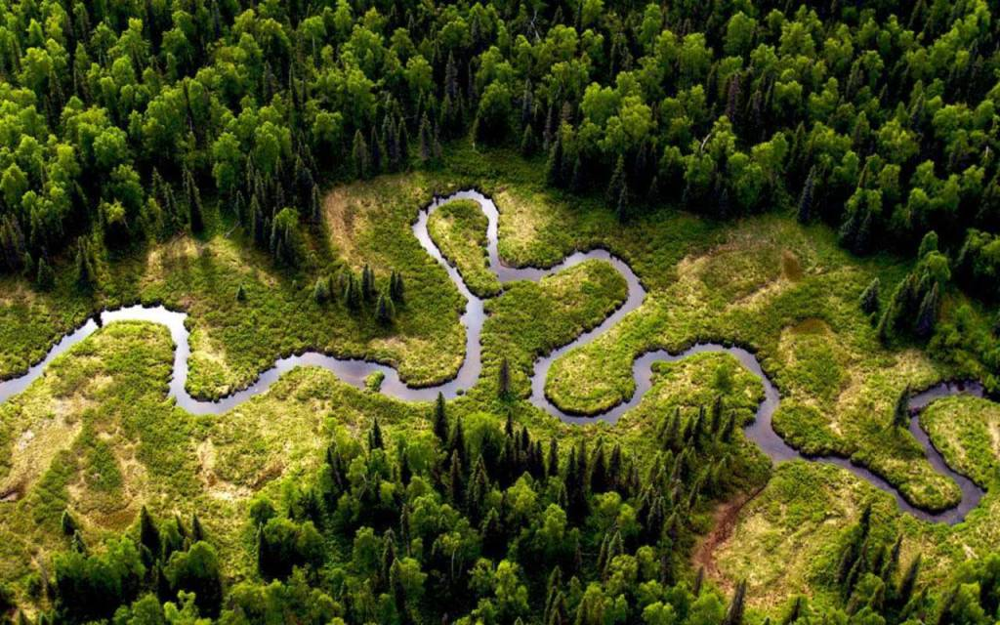

Амазонка
Главная страница
Амазонка — самая полноводная река в мире, расположенная в Южной Америке. Образуется слиянием рек Мараньон и Укаяли. Длина Амазонки является в научном сообществе дискуссионным вопросом и по различным измерениям составляет: от истока реки Мараньон — около 6400 км, от истока реки Апачет — 6992 км, от истока Укаяли — около 7100 км. Амазонка со своим длиннейшим истоком претендует, вместе с Нилом, на статус самого длинного водотока в мире, а также является крупнейшей в мире рекой по площади бассейна и полноводности. Годовой сток реки составляет 6937,92 км³, то есть в сутки она выносит примерно 19 км³ воды.
Большая часть бассейна Амазонки принадлежит Бразилии, юго-западные и западные районы — Боливии, Перу, Эквадору и Колумбии. Протекая большей частью по Амазонской низменности в субширотном направлении близ экватора, Амазонка впадает в Атлантический океан, образуя одну из самых больших в мире дельт (площадью свыше 100 тыс. км² и включающую один из самых больших в мире речных островов — Маражо). Амазонку питают многочисленные притоки; около 20 из них длиной более 1500 км. Наиболее значительные притоки: справа — Журуа, Пурус, Мадейра, Тапажос, Шингу, Токантинс; слева — Путумайо, Жапура, Риу-Негру.
Амазония удивляет богатством фауны и флоры. На огромном пространстве обитает более миллиона самых разных видов растений и животных, и эту местность без преувеличения можно назвать мировым генетическим фондом. Учёные утверждают, что на 10 км² тропического леса приходится 1,5 тысяч видов цветов, 750 видов деревьев, 125 видов млекопитающих, 400 видов птиц и бесчисленное количество беспозвоночных животных. Многие их виды даже не описаны и не идентифицированы.
Длинна: 6400 км
Площадь: 7 180 тыс. км²
Расход воды: 220 000 м³/сек
АМАЗОНКА НА КАРТЕ